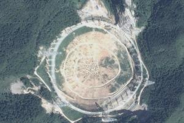

预计在2013年，一座口径达500米的球面射电望远镜FAST，将在贵州喀斯特洼地建成。该项目首席科学家、中科院国家天文台南仁东研究员在上海召开的“中国天文学会2006年学术年会”上表示，与世界现有最大口径100米望远镜相比，其观测能力提高了10倍，并且将在未来20~30年保持世界领先地位。
12月21日，中航工业贵州云马飞机制造厂运用航空制造技术，成功完成了FAST项目12米相似三角形的铝合金面板验证模型制造。该模型由100个1.2米等边三角形构成，每个等边三角形三个交点孔位置精度保持在0.1-0.15mm。该模型的成功制造，标志着云马厂在走向参与规划建设目前世界上最大的、具有500米口径球面射电望远镜（Five hundred meters Aperture Spherical Telescope，简称FAST）的工作中迈出了重要一步。
据悉，FAST是国家科教领导小组审议确定的国家九大科技基础设施之一，2007年7月10日，经国家发改委正式批复FAST立项后进入可行性研究阶段。由中国科学院和贵州省人民政府共同建设。建设周期以开工报告通过之日起约5.5年。该项目拟采用我国科学家独创的设计和我国贵州南部的喀斯特洼地的独特地形条件，建设一个约30个足球场大的高灵敏度的巨型射电望远镜。
FAST建成后将成为世界上最大口径的射电望远镜，FAST与号称“地面最大的机器”的德国波恩100米望远镜相比，灵敏度提高约10倍；与排在阿波罗登月之前、被评为人类20世纪十大工程之首的美国Arecibo 300米望远镜相比，其综合性能提高约10倍。作为世界最大的单口径望远镜，FAST将在未来20～30年保持世界一流设备的地位。
FAST的设计技术方案除了在观测中性氢线及其他厘米波段谱线，开展从宇宙起源到星际物质结构的探讨、对暗弱脉冲星及其他暗弱射电源的搜索、高效率开展对地外理性生命的搜索等6个方面实现科学和技术的重大突破外，还将作为一个多学科基础研究平台，有能力将中性氢
观测延伸至宇宙边缘，观测暗物质和暗能量，寻找第一代天体。
本主题相关词条：中国天眼，贵州平塘球面射电望远镜，500米口径球面射电望远镜，FAST望远镜，世界最大望远镜，FAST项目。